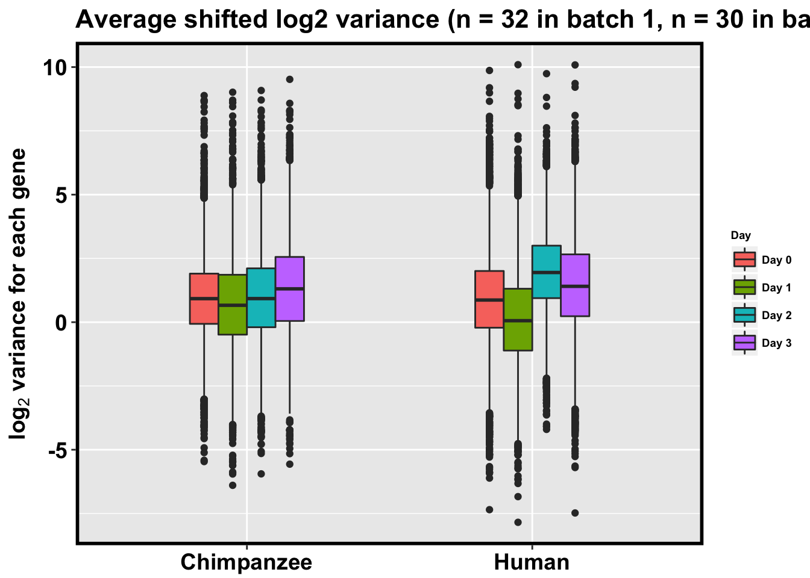

The goal of this script is to assess the extent of regulatory variation in our cell types incorporating information about purity.
# Load libraries
library("ggplot2")## Warning: package 'ggplot2' was built under R version 3.2.5library("qvalue")## Warning: package 'qvalue' was built under R version 3.2.3source("~/Desktop/Endoderm_TC/ashlar-trial/analysis/chunk-options.R")## Warning: package 'knitr' was built under R version 3.2.5library("RColorBrewer")
# Load colors
pal <- c(brewer.pal(9, "Set1"), brewer.pal(8, "Set2"), brewer.pal(12, "Set3"))
# Load functions
bjpm<-
theme(
panel.border = element_rect(colour = "black", fill = NA, size = 2),
plot.title = element_text(size = 16, face = "bold"),
axis.text.y = element_text(size = 14,face = "bold",color = "black"),
axis.text.x = element_text(size = 14,face = "bold",color = "black"),
axis.title.y = element_text(size = 14,face = "bold"),
axis.title.x=element_blank(),
legend.text = element_text(size = 14,face = "bold"),
legend.title = element_text(size = 14,face = "bold"),
strip.text.x = element_text(size = 14,face = "bold"),
strip.text.y = element_text(size = 14,face = "bold"),
strip.background = element_rect(colour = "black", size = 2))
bjp<-
theme(
axis.text.y = element_text(size = 9,face = "bold",color = "black"),
axis.title.y = element_text(size = 10,face = "bold",color = "black"),
axis.text.x = element_text(size = 9,face = "bold",color = "black"),
axis.title.x = element_text(size = 10,face = "bold",color = "black"),
plot.title = element_text(size = 13, face = "bold"))# Import sample and purity information
Endo_TC_Data_Share_Sorting <- read.csv("../data/Endo_TC_Data_Share_Sorting.csv", header = TRUE)
Endo_TC_Data_Share_Sorting <- Endo_TC_Data_Share_Sorting[1:63,1:43]
# Get only samples with purity
samples_with_purity <- Endo_TC_Data_Share_Sorting[!is.na(Endo_TC_Data_Share_Sorting["Purity"]),]
dim(samples_with_purity)[1] 30 43# Sort into humans with purity
humans_with_purity <- samples_with_purity[which(samples_with_purity$Species == "human"),]
dim(humans_with_purity)[1] 14 43# Make the dataset simplier
collect_info <- c(1,3,5,6,10,13,17)
humans_with_purity <- humans_with_purity[,collect_info]
# Correlation between day and purity in humans
cor(humans_with_purity$Day, humans_with_purity$Purity)[1] -0.859689summary(lm(humans_with_purity$Purity ~ as.factor(humans_with_purity$Day)))
Call:
lm(formula = humans_with_purity$Purity ~ as.factor(humans_with_purity$Day))
Residuals:
Min 1Q Median 3Q Max
-0.214750 -0.023981 0.009071 0.049131 0.228250
Coefficients:
Estimate Std. Error t value Pr(>|t|)
(Intercept) 0.84733 0.07370 11.496 4.37e-07
as.factor(humans_with_purity$Day)1 -0.09481 0.09750 -0.972 0.353797
as.factor(humans_with_purity$Day)2 -0.27358 0.09750 -2.806 0.018604
as.factor(humans_with_purity$Day)3 -0.58500 0.10423 -5.612 0.000224
(Intercept) ***
as.factor(humans_with_purity$Day)1
as.factor(humans_with_purity$Day)2 *
as.factor(humans_with_purity$Day)3 ***
---
Signif. codes: 0 '***' 0.001 '**' 0.01 '*' 0.05 '.' 0.1 ' ' 1
Residual standard error: 0.1277 on 10 degrees of freedom
Multiple R-squared: 0.7912, Adjusted R-squared: 0.7285
F-statistic: 12.63 on 3 and 10 DF, p-value: 0.0009767summary(lm(humans_with_purity$Purity ~ humans_with_purity$Day))
Call:
lm(formula = humans_with_purity$Purity ~ humans_with_purity$Day)
Residuals:
Min 1Q Median 3Q Max
-0.250362 -0.047831 0.004032 0.059685 0.281732
Coefficients:
Estimate Std. Error t value Pr(>|t|)
(Intercept) 0.90608 0.06063 14.95 4.05e-09 ***
humans_with_purity$Day -0.19291 0.03309 -5.83 8.09e-05 ***
---
Signif. codes: 0 '***' 0.001 '**' 0.01 '*' 0.05 '.' 0.1 ' ' 1
Residual standard error: 0.1303 on 12 degrees of freedom
Multiple R-squared: 0.7391, Adjusted R-squared: 0.7173
F-statistic: 33.99 on 1 and 12 DF, p-value: 8.086e-05# Start with cpm
cpm_cyclicloess <- read.delim("../data/cpm_cyclicloess.txt")
# Filter cpm for only the human samples that you have a purity value for
human_purity_samples <- as.matrix(humans_with_purity$Lauren_Sorting)[1:14,]
cpm_human_purity_samples <- cpm_cyclicloess[,human_purity_samples]
# Sort into chimps with purity
chimps_with_purity <- samples_with_purity[which(samples_with_purity$Species == "chimp"),]
dim(chimps_with_purity)[1] 16 43# Correlation between day and purity in chimps
cor(chimps_with_purity$Day, chimps_with_purity$Purity)[1] -0.03369019summary(lm(chimps_with_purity$Purity ~ chimps_with_purity$Day))
Call:
lm(formula = chimps_with_purity$Purity ~ chimps_with_purity$Day)
Residuals:
Min 1Q Median 3Q Max
-0.20100 -0.05309 0.03044 0.06351 0.14526
Coefficients:
Estimate Std. Error t value Pr(>|t|)
(Intercept) 0.810740 0.042607 19.028 2.11e-11 ***
chimps_with_purity$Day -0.002873 0.022774 -0.126 0.901
---
Signif. codes: 0 '***' 0.001 '**' 0.01 '*' 0.05 '.' 0.1 ' ' 1
Residual standard error: 0.1018 on 14 degrees of freedom
Multiple R-squared: 0.001135, Adjusted R-squared: -0.07021
F-statistic: 0.01591 on 1 and 14 DF, p-value: 0.9014summary(lm(chimps_with_purity$Purity ~ as.factor(chimps_with_purity$Day)))
Call:
lm(formula = chimps_with_purity$Purity ~ as.factor(chimps_with_purity$Day))
Residuals:
Min 1Q Median 3Q Max
-0.20750 -0.03878 0.01300 0.04234 0.08650
Coefficients:
Estimate Std. Error t value Pr(>|t|)
(Intercept) 0.87700 0.04128 21.246 6.88e-11
as.factor(chimps_with_purity$Day)1 -0.17177 0.05838 -2.943 0.0123
as.factor(chimps_with_purity$Day)2 -0.06550 0.05838 -1.122 0.2838
as.factor(chimps_with_purity$Day)3 -0.04500 0.05838 -0.771 0.4557
(Intercept) ***
as.factor(chimps_with_purity$Day)1 *
as.factor(chimps_with_purity$Day)2
as.factor(chimps_with_purity$Day)3
---
Signif. codes: 0 '***' 0.001 '**' 0.01 '*' 0.05 '.' 0.1 ' ' 1
Residual standard error: 0.08256 on 12 degrees of freedom
Multiple R-squared: 0.4375, Adjusted R-squared: 0.2969
F-statistic: 3.111 on 3 and 12 DF, p-value: 0.06671# Make the dataset simplier
collect_info <- c(1,3,5,6,10,13,17)
chimps_with_purity <- chimps_with_purity[,collect_info]
# Filter cpm for only the chimp samples that you have a purity value for
chimp_purity_samples <- as.matrix(chimps_with_purity$Lauren_Sorting)
cpm_chimp_purity_samples <- cpm_cyclicloess[, chimp_purity_samples]collect_info <- c(1,3,4,5,6,10,13,17)
samples_with_purity_abbr <- samples_with_purity[,collect_info]
samples_with_purity_abbr$Day[samples_with_purity_abbr$Day == "0"] <- "Day 0"
samples_with_purity_abbr$Day[samples_with_purity_abbr$Day == "1"] <- "Day 1"
samples_with_purity_abbr$Day[samples_with_purity_abbr$Day == "2"] <- "Day 2"
samples_with_purity_abbr$Day[samples_with_purity_abbr$Day == "3"] <- "Day 3"
ggplot(data = samples_with_purity_abbr, aes(y = Purity, x = as.factor(Species))) + facet_wrap(~ Day, nrow = 1) + geom_boxplot() + geom_dotplot(binaxis='y', stackdir='center', dotsize = 0.75) + labs(x = "Species", y = "Purity") + theme_bw() + bjp`stat_bindot()` using `bins = 30`. Pick better value with `binwidth`.# How does the coefficient for day change if purity isn't in the model
# Compare fits over all genes
#library("lme4")
#human_anova_results <- array(0, dim = c(10304, 1))
#for (i in 1:10304){
# fit1 <- glm(t(cpm_human_purity_samples[i,]) ~ as.factor(humans_with_purity$TC_day) + humans_with_purity$High_Conf_Purity + humans_with_purity$RIN + (1|humans_with_purity$Cell_Line))
# fit2 <- glm(t(cpm_human_purity_samples[i,]) ~ as.factor(humans_with_purity$TC_day) + humans_with_purity$RIN + (1|humans_with_purity$Cell_Line))
# human_anova_results[i,1] <- anova(fit1, fit2, test = "F")[2,6]
#}
#hist(human_anova_results[,1], main = "P values comparing models of normalized expression w/ and w/o purity (n = 10,304 genes)", xlab = "P value")
#length(human_anova_results[which(human_anova_results < 0.1), ])cpm_human_purity_samples <- as.matrix(cpm_human_purity_samples)
# Make an array to hold the residuals
resid_human_purity <- array(0, dim = c(10304, 14))
# Regress out purity on a gene-by-gene basis
i = 1
for (i in 1:10304){
resid_human_purity[i,] <- lm(cpm_human_purity_samples[i,] ~ humans_with_purity$Purity)$resid
}
colnames(resid_human_purity) <- colnames(cpm_human_purity_samples)
# Get the PCA of the residuals
# Humans only
day <- c(0,0,0,1,1,1,1,2,2,2,2,3,3,3)
# Make PCA plots with the factors colored by day
pca_genes <- prcomp(t(resid_human_purity), scale = T, retx = TRUE, center = TRUE)
matrixpca <- pca_genes$x
pc1 <- matrixpca[,1]
pc2 <- matrixpca[,2]
pc3 <- matrixpca[,3]
pc4 <- matrixpca[,4]
pc5 <- matrixpca[,5]
pcs <- data.frame(pc1, pc2, pc3, pc4, pc5)
summary <- summary(pca_genes)
#dev.off()
ggplot(data=pcs, aes(x=pc1, y=pc2, color=as.factor(day+1), shape= as.factor(humans_with_purity$Sample_ID))) + geom_point(size = 5) + xlab(paste("PC1 (",(summary$importance[2,1]*100), "% of variance)")) + ylab(paste("PC2 (",(summary$importance[2,2]*100), "% of variance)")) + theme_minimal() + guides(color = guide_legend(order=1), size = FALSE, shape = guide_legend(order=3)) + scale_color_discrete(name ="Day", labels = c("0", "1", "2", "3")) + scale_shape_discrete(name ="Cell line") + labs(title = "Human PCs 1 and 2 after regressing out purity (n = 14)") + bjp# Relationship between day/sample ID and residuals
summary(lm(pc1 ~ as.factor(humans_with_purity$Sample_ID))) # Adjusted R-squared: 0.3987
Call:
lm(formula = pc1 ~ as.factor(humans_with_purity$Sample_ID))
Residuals:
Min 1Q Median 3Q Max
-78.940 -20.752 1.489 23.980 64.488
Coefficients:
Estimate Std. Error t value
(Intercept) 56.43 25.07 2.251
as.factor(humans_with_purity$Sample_ID)H4 -48.08 35.46 -1.356
as.factor(humans_with_purity$Sample_ID)H5B -50.24 33.17 -1.515
as.factor(humans_with_purity$Sample_ID)H6 -111.19 33.17 -3.353
Pr(>|t|)
(Intercept) 0.04812 *
as.factor(humans_with_purity$Sample_ID)H4 0.20487
as.factor(humans_with_purity$Sample_ID)H5B 0.16073
as.factor(humans_with_purity$Sample_ID)H6 0.00733 **
---
Signif. codes: 0 '***' 0.001 '**' 0.01 '*' 0.05 '.' 0.1 ' ' 1
Residual standard error: 43.42 on 10 degrees of freedom
Multiple R-squared: 0.5374, Adjusted R-squared: 0.3987
F-statistic: 3.873 on 3 and 10 DF, p-value: 0.04488summary(lm(pc1 ~ as.factor(humans_with_purity$Day))) # Adjusted R-squared: 0.1286
Call:
lm(formula = pc1 ~ as.factor(humans_with_purity$Day))
Residuals:
Min 1Q Median 3Q Max
-93.284 -14.626 6.493 15.366 71.163
Coefficients:
Estimate Std. Error t value Pr(>|t|)
(Intercept) -37.19 30.18 -1.232 0.2460
as.factor(humans_with_purity$Day)1 13.60 39.92 0.341 0.7405
as.factor(humans_with_purity$Day)2 76.99 39.92 1.928 0.0826 .
as.factor(humans_with_purity$Day)3 52.78 42.68 1.237 0.2444
---
Signif. codes: 0 '***' 0.001 '**' 0.01 '*' 0.05 '.' 0.1 ' ' 1
Residual standard error: 52.27 on 10 degrees of freedom
Multiple R-squared: 0.3297, Adjusted R-squared: 0.1286
F-statistic: 1.64 on 3 and 10 DF, p-value: 0.242# Sort into chimps with purity
chimps_with_purity <- samples_with_purity[which(samples_with_purity$Species == "chimp"),]
dim(chimps_with_purity)[1] 16 43# Correlation between day and purity in chimps
cor(chimps_with_purity$Day, chimps_with_purity$Purity)[1] -0.03369019summary(lm(chimps_with_purity$Purity ~ chimps_with_purity$Day))
Call:
lm(formula = chimps_with_purity$Purity ~ chimps_with_purity$Day)
Residuals:
Min 1Q Median 3Q Max
-0.20100 -0.05309 0.03044 0.06351 0.14526
Coefficients:
Estimate Std. Error t value Pr(>|t|)
(Intercept) 0.810740 0.042607 19.028 2.11e-11 ***
chimps_with_purity$Day -0.002873 0.022774 -0.126 0.901
---
Signif. codes: 0 '***' 0.001 '**' 0.01 '*' 0.05 '.' 0.1 ' ' 1
Residual standard error: 0.1018 on 14 degrees of freedom
Multiple R-squared: 0.001135, Adjusted R-squared: -0.07021
F-statistic: 0.01591 on 1 and 14 DF, p-value: 0.9014summary(lm(chimps_with_purity$Purity ~ as.factor(chimps_with_purity$Day)))
Call:
lm(formula = chimps_with_purity$Purity ~ as.factor(chimps_with_purity$Day))
Residuals:
Min 1Q Median 3Q Max
-0.20750 -0.03878 0.01300 0.04234 0.08650
Coefficients:
Estimate Std. Error t value Pr(>|t|)
(Intercept) 0.87700 0.04128 21.246 6.88e-11
as.factor(chimps_with_purity$Day)1 -0.17177 0.05838 -2.943 0.0123
as.factor(chimps_with_purity$Day)2 -0.06550 0.05838 -1.122 0.2838
as.factor(chimps_with_purity$Day)3 -0.04500 0.05838 -0.771 0.4557
(Intercept) ***
as.factor(chimps_with_purity$Day)1 *
as.factor(chimps_with_purity$Day)2
as.factor(chimps_with_purity$Day)3
---
Signif. codes: 0 '***' 0.001 '**' 0.01 '*' 0.05 '.' 0.1 ' ' 1
Residual standard error: 0.08256 on 12 degrees of freedom
Multiple R-squared: 0.4375, Adjusted R-squared: 0.2969
F-statistic: 3.111 on 3 and 12 DF, p-value: 0.06671# Make the dataset simplier
collect_info <- c(1,3,5,6,10,13,17)
chimps_with_purity <- chimps_with_purity[,collect_info]
# Filter cpm for only the chimp samples that you have a purity value for
chimp_purity_samples <- as.matrix(chimps_with_purity$Lauren_Sorting)
cpm_chimp_purity_samples <- cpm_cyclicloess[, chimp_purity_samples]
# Make an array to hold the residuals
resid_chimp_purity <- array(0, dim = c(10304, 16))
# Regress out purity on a gene-by-gene basis
cpm_chimp_purity_samples <- as.matrix(cpm_chimp_purity_samples)
i = 1
for (i in 1:10304){
resid_chimp_purity[i,] <- lm(cpm_chimp_purity_samples[i,] ~ chimps_with_purity$Purity)$resid
}
colnames(resid_chimp_purity) <- colnames(cpm_chimp_purity_samples)
# Chimps only
day <- c(0,0,0,0,1,1,1,1,2,2,2,2,3,3,3,3)
# Make PCA plots with the factors colored by day
pca_genes <- prcomp(t(resid_chimp_purity), scale = T, retx = TRUE, center = TRUE)
matrixpca <- pca_genes$x
pc1 <- matrixpca[,1]
pc2 <- matrixpca[,2]
pc3 <- matrixpca[,3]
pc4 <- matrixpca[,4]
pc5 <- matrixpca[,5]
pcs <- data.frame(pc1, pc2, pc3, pc4, pc5)
summary <- summary(pca_genes)
#dev.off()
ggplot(data=pcs, aes(x=pc1, y=pc2, color=as.factor(day+1), shape = as.factor(chimps_with_purity$Sample_ID))) + geom_point(size = 5) + xlab(paste("PC1 (",(summary$importance[2,1]*100), "% of variance)")) + ylab(paste("PC2 (",(summary$importance[2,2]*100), "% of variance)")) + theme_minimal() + guides(color = guide_legend(order=1), size = FALSE, shape = guide_legend(order=3)) + scale_color_discrete(name ="Day", labels = c("0", "1", "2", "3")) + scale_shape_discrete(name ="Cell line") + labs(title = "Chimp PCs 1 and 2 after regressing out purity (n = 16)") + bjp# All together
# Create a new data frame with all of the combined technical replicates
reps <- cbind(resid_human_purity[,1:3], resid_chimp_purity[,1:4], resid_human_purity[,4:7], resid_chimp_purity[,5:8], resid_human_purity[,8:11],resid_chimp_purity[,9:12], resid_human_purity[,12:14], resid_chimp_purity[, 13:16])
# Find the technical factors for the biological replicates (no technical replicates)
day <- c(0,0,0,0,0,0,0,1,1,1,1,1,1,1,1,2,2,2,2,2,2,2,2,3,3,3,3,3,3,3)
species <- c("H", "H", "H", "C", "C", "C", "C", "H", "H", "H", "H", "C", "C", "C", "C", "H", "H", "H", "H", "C", "C", "C", "C", "H", "H", "H", "C", "C", "C", "C")# Calculate the variance for each species-time pair
humans_day0_var <- as.data.frame(apply(as.data.frame(reps[,1:3]),1, var))
colnames(humans_day0_var) <- c("Variance")
chimps_day0_var <- as.data.frame(apply(as.data.frame(reps[,4:7]),1, var))
colnames(chimps_day0_var) <- c("Variance")
humans_day1_var <- as.data.frame(apply(as.data.frame(reps[,8:11]),1, var))
colnames(humans_day1_var) <- c("Variance")
chimps_day1_var <- as.data.frame(apply(as.data.frame(reps[,12:15]),1, var))
colnames(chimps_day1_var) <- c("Variance")
humans_day2_var <- as.data.frame(apply(as.data.frame(reps[,16:19]),1, var))
colnames(humans_day2_var) <- c("Variance")
chimps_day2_var <- as.data.frame(apply(as.data.frame(reps[,20:23]),1, var))
colnames(chimps_day2_var) <- c("Variance")
humans_day3_var <- as.data.frame(apply(as.data.frame(reps[,24:26]),1, var))
colnames(humans_day3_var) <- c("Variance")
chimps_day3_var <- as.data.frame(apply(as.data.frame(reps[,27:30]),1, var))
colnames(chimps_day3_var) <- c("Variance")
# Calculate the mean for each species-time pair
humans_day0_mean <- as.data.frame(apply(as.data.frame(reps[,1:3]),1, mean))
colnames(humans_day0_mean) <- c("Mean")
chimps_day0_mean <- as.data.frame(apply(as.data.frame(reps[,4:7]),1, mean))
colnames(chimps_day0_mean) <- c("Mean")
humans_day1_mean <- as.data.frame(apply(as.data.frame(reps[,8:11]),1, mean))
colnames(humans_day1_mean) <- c("Mean")
chimps_day1_mean <- as.data.frame(apply(as.data.frame(reps[,12:15]),1, mean))
colnames(chimps_day1_mean) <- c("Mean")
humans_day2_mean <- as.data.frame(apply(as.data.frame(reps[,16:19]),1, mean))
colnames(humans_day2_mean) <- c("Mean")
chimps_day2_mean <- as.data.frame(apply(as.data.frame(reps[,20:23]),1, mean))
colnames(chimps_day2_mean) <- c("Mean")
humans_day3_mean <- as.data.frame(apply(as.data.frame(reps[,24:26]),1, mean))
colnames(humans_day3_mean) <- c("Mean")
chimps_day3_mean <- as.data.frame(apply(as.data.frame(reps[,27:30]),1, mean))
colnames(chimps_day3_mean) <- c("Mean")
# Make arrays with all the means
chimp_0 <- array("Chimp Day 0", dim = c(10304, 1))
chimp_1 <- array("Chimp Day 1", dim = c(10304, 1))
chimp_2 <- array("Chimp Day 2", dim = c(10304, 1))
chimp_3 <- array("Chimp Day 3", dim = c(10304, 1))
human_0 <- array("Human Day 0", dim = c(10304, 1))
human_1 <- array("Human Day 1", dim = c(10304, 1))
human_2 <- array("Human Day 2", dim = c(10304, 1))
human_3 <- array("Human Day 3", dim = c(10304, 1))
# Make day labels
day_0 <- array("Day 0", dim = c(10304, 1))
day_1 <- array("Day 1", dim = c(10304, 1))
day_2 <- array("Day 2", dim = c(10304, 1))
day_3 <- array("Day 3", dim = c(10304, 1))
# Make species-day labels
day_species_label <- rbind(chimp_0, chimp_1, chimp_2, chimp_3, human_0, human_1, human_2, human_3)
day_species_label <- as.numeric(as.factor(day_species_label))
# Make labels so same days from different species are the same color
day_label <- rbind(day_0, day_1, day_2, day_3)
day_label <- as.numeric(as.factor(day_label))
# Make species labels
chimp_label <- array("Chimpanzee", dim = c(41216, 1))
human_label <- array("Human", dim = c(41216, 1))
species_only_label <- rbind(chimp_label, human_label)
#1 Overall trend across genes
# Boxplot of means gives general trend
# Combine means
HC_mean <- rbind(as.data.frame(chimps_day0_mean), as.data.frame(chimps_day1_mean), as.data.frame(chimps_day2_mean), as.data.frame(chimps_day3_mean), as.data.frame(humans_day0_mean), as.data.frame(humans_day1_mean), as.data.frame(humans_day2_mean), as.data.frame(humans_day3_mean))
HC_mean_labels <- cbind(HC_mean, day_species_label, day_label, species_only_label)
m <- ggplot(HC_mean_labels, aes(x = factor(day_species_label), y = HC_mean))
m <- m + geom_violin(aes(fill = factor(day_label)), show.legend = FALSE) + geom_boxplot(aes(fill = factor(day_label)), show.legend = FALSE, outlier.shape = NA,width=0.2) + theme_bw() + ggtitle("Mean of the residuals for each gene by species and day") + xlab("Species-Day Pair") + ylab("Mean of the residuals for each gene")
m <- m + scale_x_discrete(labels=c("1" = "C Day 0", "2" = "C Day 1", "3" = "C Day 2", "4" = "C Day 3", "5" = "H Day 0", "6" = "H Day 1", "7" = "H Day 2", "8" = "H Day 3")) + bjp
mDon't know how to automatically pick scale for object of type data.frame. Defaulting to continuous.mean_close <- ggplot(HC_mean_labels, aes(x = factor(day_species_label), y = HC_mean)) + geom_boxplot(aes(fill = as.factor(day_label))) + xlab("Species") + ylab(expression(bold('Mean of residuals'))) + scale_fill_discrete(name= "Day", labels=c("Day 0","Day 1","Day 2", "Day 3"))
mean_close + bjpm + theme(legend.text=element_text(size=7), legend.title=element_text(size=7, face = "bold" ))Don't know how to automatically pick scale for object of type data.frame. Defaulting to continuous.# Take log2 of each data frame
log_chimps_day0_var <- log2(chimps_day0_var)
log_chimps_day1_var <- log2(chimps_day1_var)
log_chimps_day2_var <- log2(chimps_day2_var)
log_chimps_day3_var <- log2(chimps_day3_var)
log_humans_day0_var <- log2(humans_day0_var)
log_humans_day1_var <- log2(humans_day1_var)
log_humans_day2_var <- log2(humans_day2_var)
log_humans_day3_var <- log2(humans_day3_var)
# Boxplot of variances gives general trend
HC_var <- rbind(as.data.frame(log_chimps_day0_var), as.data.frame(log_chimps_day1_var), as.data.frame(log_chimps_day2_var), as.data.frame(log_chimps_day3_var), as.data.frame(log_humans_day0_var), as.data.frame(log_humans_day1_var), as.data.frame(log_humans_day2_var), as.data.frame(log_humans_day3_var))
HC_var_resid_check_cor <- HC_var
summary(log_humans_day0_var) Variance
Min. :-19.341
1st Qu.: -6.337
Median : -4.850
Mean : -4.917
3rd Qu.: -3.366
Max. : 4.389 summary(log_humans_day1_var) Variance
Min. :-14.021
1st Qu.: -6.233
Median : -4.877
Mean : -4.871
3rd Qu.: -3.536
Max. : 4.701 #HC_var <- rbind(as.data.frame(chimps_day0_var), as.data.frame(chimps_day1_var), as.data.frame(chimps_day2_var), as.data.frame(chimps_day3_var), as.data.frame(humans_day0_var), as.data.frame(humans_day1_var), as.data.frame(humans_day2_var), as.data.frame(humans_day3_var))
#summary(humans_day0_var)
#summary(humans_day1_var)
HC_var_labels <- cbind(HC_var, day_species_label, day_label, species_only_label)
colnames(HC_var_labels) <- c("Variance", "SpeciesDay", "Day", "Species")
p <- ggplot(HC_var_labels, aes(x = factor(Species), y = Variance)) + geom_boxplot(aes(fill = as.factor(Day)),width=0.4) + xlab("Species") + ylab(expression(bold('Variance in residuals for each gene'))) + scale_fill_discrete(name= "Day", labels=c("Day 0","Day 1","Day 2", "Day 3")) + bjpm + theme(legend.text=element_text(size=7), legend.title=element_text(size=7, face = "bold" ))
pp <- ggplot(HC_var_labels, aes(x = factor(Species), y = Variance)) + geom_boxplot(aes(fill = as.factor(Day)),width=0.4) + xlab("Species") + ylab(expression(bold('Variance in residuals for each gene'))) + scale_fill_discrete(name= "Day", labels=c("Day 0","Day 1","Day 2", "Day 3")) + scale_y_continuous(limits = c(0, 0.75)) + bjpm + theme(legend.text=element_text(size=7), legend.title=element_text(size=7, face = "bold" ))
pWarning: Removed 80855 rows containing non-finite values (stat_boxplot).# Make a boxplot of log2(variance of gene expression levels)
HC_var_labels <- cbind(HC_var, day_species_label, day_label, species_only_label)
dim(HC_var_labels)[1] 82432 4p <- ggplot(HC_var_labels, aes(x = factor(day_species_label), y = HC_var))
p <- p + geom_violin(aes(fill = factor(day_label)), show.legend = FALSE) + geom_boxplot(aes(fill = factor(day_label)), show.legend = FALSE, outlier.shape = NA,width=0.2) + theme_bw() + xlab("Species-Day Pair") + ylab("log2 variance of gene expression") + ggtitle("Log2 variance for each gene by species and day")
p <- p + scale_x_discrete(labels=c("1" = "C Day 0", "2" = "C Day 1", "3" = "C Day 2", "4" = "C Day 3", "5" = "H Day 0", "6" = "H Day 1", "7" = "H Day 2", "8" = "H Day 3"))
p + bjpDon't know how to automatically pick scale for object of type data.frame. Defaulting to continuous.# Make boxplots that are not violin plots
colnames(HC_var_labels) <- c("Variance", "SpeciesDay", "Day", "Species")
p <- ggplot(HC_var_labels, aes(x = factor(Species), y = Variance)) + geom_boxplot(aes(fill = as.factor(Day)),width=0.4) + xlab("Species") + ylab(expression(bold('log'[2]*' variance in residuals for each gene'))) + scale_fill_discrete(name= "Day", labels=c("Day 0","Day 1","Day 2", "Day 3")) + ggtitle("Log2 variance in residuals (n=30)")
p + bjpm + theme(legend.text=element_text(size=7), legend.title=element_text(size=7, face = "bold" ))# Get the samples that we don't have purity for
Endo_TC_Data_Share_Sorting <- read.csv("../data/Endo_TC_Data_Share_Sorting.csv", header = TRUE)
Endo_TC_Data_Share_Sorting <- Endo_TC_Data_Share_Sorting[1:63,1:43]
samples_without_purity <- Endo_TC_Data_Share_Sorting[is.na(Endo_TC_Data_Share_Sorting["Purity"]),]
dim(samples_without_purity)[1] 33 43samples_without_purity <- samples_without_purity[,collect_info]
#col_without_purity <- as.matrix(samples_without_purity$Lauren_Sorting)
#cpm_batch1 <- cpm_cyclicloess[,col_without_purity]
# Create a new data frame with all of the combined technical replicates
cpm_batch1 <- cbind(cpm_cyclicloess[,1], cpm_cyclicloess[,2], cpm_cyclicloess[,3], cpm_cyclicloess[,5], cpm_cyclicloess[,8], cpm_cyclicloess[,10], cpm_cyclicloess[,12], cpm_cyclicloess[,14], cpm_cyclicloess[,16], cpm_cyclicloess[,18], cpm_cyclicloess[,19], cpm_cyclicloess[,21], cpm_cyclicloess[,24], cpm_cyclicloess[,26], cpm_cyclicloess[,28], cpm_cyclicloess[,30], cpm_cyclicloess[,32], cpm_cyclicloess[,34], cpm_cyclicloess[,35], cpm_cyclicloess[,37], cpm_cyclicloess[,40], cpm_cyclicloess[,42], cpm_cyclicloess[,44], cpm_cyclicloess[,46], cpm_cyclicloess[,48], cpm_cyclicloess[,50], cpm_cyclicloess[,51], cpm_cyclicloess[,53], cpm_cyclicloess[,56], cpm_cyclicloess[,58], cpm_cyclicloess[,60], cpm_cyclicloess[,62])
# Calculate the variance for each species-time pair
b1_humans_day0_var <- as.data.frame(apply(as.data.frame(cpm_batch1[,1:4]),1, var))
colnames(b1_humans_day0_var) <- c("Variance")
b1_chimps_day0_var <- as.data.frame(apply(as.data.frame(cpm_batch1[,5:8]),1, var))
colnames(b1_chimps_day0_var) <- c("Variance")
b1_humans_day1_var <- as.data.frame(apply(as.data.frame(cpm_batch1[,9:12]),1, var))
colnames(b1_humans_day1_var) <- c("Variance")
b1_chimps_day1_var <- as.data.frame(apply(as.data.frame(cpm_batch1[,13:16]),1, var))
colnames(b1_chimps_day1_var) <- c("Variance")
b1_humans_day2_var <- as.data.frame(apply(as.data.frame(cpm_batch1[,17:20]),1, var))
colnames(b1_humans_day2_var) <- c("Variance")
b1_chimps_day2_var <- as.data.frame(apply(as.data.frame(cpm_batch1[,21:24]),1, var))
colnames(b1_chimps_day2_var) <- c("Variance")
b1_humans_day3_var <- as.data.frame(apply(as.data.frame(cpm_batch1[,25:28]),1, var))
colnames(b1_humans_day3_var) <- c("Variance")
b1_chimps_day3_var <- as.data.frame(apply(as.data.frame(cpm_batch1[,29:32]),1, var))
colnames(b1_chimps_day3_var) <- c("Variance")
# Make arrays with all the means
chimp_0 <- array("Chimp Day 0", dim = c(10304, 1))
chimp_1 <- array("Chimp Day 1", dim = c(10304, 1))
chimp_2 <- array("Chimp Day 2", dim = c(10304, 1))
chimp_3 <- array("Chimp Day 3", dim = c(10304, 1))
human_0 <- array("Human Day 0", dim = c(10304, 1))
human_1 <- array("Human Day 1", dim = c(10304, 1))
human_2 <- array("Human Day 2", dim = c(10304, 1))
human_3 <- array("Human Day 3", dim = c(10304, 1))
# Make day labels
day_0 <- array("Day 0", dim = c(10304, 1))
day_1 <- array("Day 1", dim = c(10304, 1))
day_2 <- array("Day 2", dim = c(10304, 1))
day_3 <- array("Day 3", dim = c(10304, 1))
# Make species-day labels
day_species_label <- rbind(chimp_0, chimp_1, chimp_2, chimp_3, human_0, human_1, human_2, human_3)
day_species_label <- as.numeric(as.factor(day_species_label))
# Make labels so same days from different species are the same color
day_label <- rbind(day_0, day_1, day_2, day_3)
day_label <- as.numeric(as.factor(day_label))
# Make species labels
chimp_label <- array("Chimpanzee", dim = c(41216, 1))
human_label <- array("Human", dim = c(41216, 1))
species_only_label <- rbind(chimp_label, human_label)
b1_log_chimps_day0_var <- log2(b1_chimps_day0_var)
mean(b1_log_chimps_day0_var[,1])[1] -4.210481var(b1_log_chimps_day0_var[,1])[1] 3.751716b1_log_chimps_day1_var <- log2(b1_chimps_day1_var)
mean(b1_log_chimps_day1_var[,1])[1] -4.481838var(b1_log_chimps_day1_var[,1])[1] 3.787556b1_log_chimps_day2_var <- log2(b1_chimps_day2_var)
b1_log_chimps_day3_var <- log2(b1_chimps_day3_var)
b1_log_humans_day0_var <- log2(b1_humans_day0_var)
b1_log_humans_day1_var <- log2(b1_humans_day1_var)
b1_log_humans_day2_var <- log2(b1_humans_day2_var)
b1_log_humans_day3_var <- log2(b1_humans_day3_var)
# Boxplot of variances gives general trend
b1_HC_var <- rbind(as.data.frame(b1_log_chimps_day0_var), as.data.frame(b1_log_chimps_day1_var), as.data.frame(b1_log_chimps_day2_var), as.data.frame(b1_log_chimps_day3_var), as.data.frame(b1_log_humans_day0_var), as.data.frame(b1_log_humans_day1_var), as.data.frame(b1_log_humans_day2_var), as.data.frame(b1_log_humans_day3_var))
HC_var_resid_check_cor <- b1_HC_var
summary(b1_log_humans_day0_var) Variance
Min. :-14.167
1st Qu.: -5.096
Median : -3.756
Mean : -3.866
3rd Qu.: -2.577
Max. : 4.738 summary(b1_log_humans_day1_var) Variance
Min. :-17.735
1st Qu.: -6.698
Median : -5.421
Mean : -5.433
3rd Qu.: -4.170
Max. : 4.881 #HC_var <- rbind(as.data.frame(chimps_day0_var), as.data.frame(chimps_day1_var), as.data.frame(chimps_day2_var), as.data.frame(chimps_day3_var), as.data.frame(humans_day0_var), as.data.frame(humans_day1_var), as.data.frame(humans_day2_var), as.data.frame(humans_day3_var))
#summary(humans_day0_var)
#summary(humans_day1_var)
HC_var_labels <- cbind(b1_HC_var, day_species_label, day_label, species_only_label)
colnames(HC_var_labels) <- c("Variance", "SpeciesDay", "Day", "Species")
colnames(HC_var_labels) <- c("Variance", "SpeciesDay", "Day", "Species")
p <- ggplot(HC_var_labels, aes(x = factor(Species), y = Variance)) + geom_boxplot(aes(fill = as.factor(Day)),width=0.4) + xlab("Species") + ylab(expression(bold('log'[2]*' variance of normalized gene expression (for each gene)'))) + scale_fill_discrete(name= "Day", labels=c("Day 0","Day 1","Day 2", "Day 3")) + ggtitle("Log2 variance in batch 1, (n=32)")
p + bjpm + theme(legend.text=element_text(size=7), legend.title=element_text(size=7, face = "bold" ))# Get the residuals for the humans and the chimps
# Get only samples with purity
samples_with_purity <- Endo_TC_Data_Share_Sorting[!is.na(Endo_TC_Data_Share_Sorting["Purity"]),]
dim(samples_with_purity)[1] 30 43humans_with_purity <- samples_with_purity[which(samples_with_purity$Species == "human"),]
dim(humans_with_purity)[1] 14 43# Make the dataset simplier
collect_info <- c(1,3,5,6,10,13,17)
humans_with_purity <- humans_with_purity[,collect_info]
# Filter cpm for only the human samples that you have a purity value for
human_purity_samples <- as.matrix(humans_with_purity$Lauren_Sorting)[1:14,]
cpm_human_purity_samples <- cpm_cyclicloess[,human_purity_samples]
# Make an array to hold the residuals
resid_human_purity <- array(0, dim = c(10304, 14))
# Regress out purity on a gene-by-gene basis
cpm_human_purity_samples <- as.matrix(cpm_human_purity_samples)
i = 1
for (i in 1:10304){
resid_human_purity[i,] <- lm(cpm_human_purity_samples[i,] ~ humans_with_purity$Purity)$resid
}
colnames(resid_human_purity) <- colnames(cpm_human_purity_samples)
# Sort into chimps with purity
chimps_with_purity <- samples_with_purity[which(samples_with_purity$Species == "chimp"),]
dim(chimps_with_purity)[1] 16 43# Filter cpm for only the human samples that you have a purity value for
chimp_purity_samples <- as.matrix(chimps_with_purity$Lauren_Sorting)[1:16,]
cpm_chimp_purity_samples <- cpm_cyclicloess[,chimp_purity_samples]
# Make an array to hold the residuals
resid_chimp_purity <- array(0, dim = c(10304, 16))
# Regress out purity on a gene-by-gene basis
cpm_chimp_purity_samples <- as.matrix(cpm_chimp_purity_samples)
i = 1
for (i in 1:10304){
resid_chimp_purity[i,] <- lm(cpm_chimp_purity_samples[i,] ~ chimps_with_purity$Purity)$resid
}
colnames(resid_chimp_purity) <- colnames(cpm_chimp_purity_samples)
humans_day0_var <- as.data.frame(apply(as.data.frame(resid_human_purity[,1:3]),1, var))
colnames(humans_day0_var) <- c("Variance")
chimps_day0_var <- as.data.frame(apply(as.data.frame(resid_chimp_purity[,1:4]),1, var))
colnames(chimps_day0_var) <- c("Variance")
humans_day1_var <- as.data.frame(apply(as.data.frame(resid_human_purity[,4:7]),1, var))
colnames(humans_day1_var) <- c("Variance")
chimps_day1_var <- as.data.frame(apply(as.data.frame(resid_chimp_purity[,5:8]),1, var))
colnames(chimps_day1_var) <- c("Variance")
humans_day2_var <- as.data.frame(apply(as.data.frame(resid_human_purity[,8:11]),1, var))
colnames(humans_day2_var) <- c("Variance")
chimps_day2_var <- as.data.frame(apply(as.data.frame(resid_chimp_purity[,9:12]),1, var))
colnames(chimps_day2_var) <- c("Variance")
humans_day3_var <- as.data.frame(apply(as.data.frame(resid_human_purity[,12:14]),1, var))
colnames(humans_day3_var) <- c("Variance")
chimps_day3_var <- as.data.frame(apply(as.data.frame(resid_chimp_purity[,13:16]),1, var))
colnames(chimps_day3_var) <- c("Variance")
# Make arrays with all the means
chimp_0 <- array("Chimp Day 0", dim = c(10304, 1))
chimp_1 <- array("Chimp Day 1", dim = c(10304, 1))
chimp_2 <- array("Chimp Day 2", dim = c(10304, 1))
chimp_3 <- array("Chimp Day 3", dim = c(10304, 1))
human_0 <- array("Human Day 0", dim = c(10304, 1))
human_1 <- array("Human Day 1", dim = c(10304, 1))
human_2 <- array("Human Day 2", dim = c(10304, 1))
human_3 <- array("Human Day 3", dim = c(10304, 1))
# Make day labels
day_0 <- array("Day 0", dim = c(10304, 1))
day_1 <- array("Day 1", dim = c(10304, 1))
day_2 <- array("Day 2", dim = c(10304, 1))
day_3 <- array("Day 3", dim = c(10304, 1))
# Make species-day labels
day_species_label <- rbind(chimp_0, chimp_1, chimp_2, chimp_3, human_0, human_1, human_2, human_3)
day_species_label <- as.numeric(as.factor(day_species_label))
# Make labels so same days from different species are the same color
day_label <- rbind(day_0, day_1, day_2, day_3)
day_label <- as.numeric(as.factor(day_label))
# Make species labels
chimp_label <- array("Chimpanzee", dim = c(41216, 1))
human_label <- array("Human", dim = c(41216, 1))
species_only_label <- rbind(chimp_label, human_label)
# Take log2 of each data frame
log_chimps_day0_var <- log2(chimps_day0_var)
log_chimps_day1_var <- log2(chimps_day1_var)
log_chimps_day2_var <- log2(chimps_day2_var)
log_chimps_day3_var <- log2(chimps_day3_var)
log_humans_day0_var <- log2(humans_day0_var)
log_humans_day1_var <- log2(humans_day1_var)
log_humans_day2_var <- log2(humans_day2_var)
log_humans_day3_var <- log2(humans_day3_var)
mean(log_chimps_day0_var[,1])[1] -3.409307var(log_chimps_day0_var[,1])[1] 3.40122mean(log_chimps_day1_var[,1])[1] -3.551896var(log_chimps_day1_var[,1])[1] 4.388677# Boxplot of variances gives general trend
HC_var <- rbind(as.data.frame(log_chimps_day0_var), as.data.frame(log_chimps_day1_var), as.data.frame(log_chimps_day2_var), as.data.frame(log_chimps_day3_var), as.data.frame(log_humans_day0_var), as.data.frame(log_humans_day1_var), as.data.frame(log_humans_day2_var), as.data.frame(log_humans_day3_var))
HC_var_resid_check_cor <- HC_var
summary(log_humans_day0_var) Variance
Min. :-19.341
1st Qu.: -6.337
Median : -4.850
Mean : -4.917
3rd Qu.: -3.366
Max. : 4.389 summary(log_humans_day1_var) Variance
Min. :-14.021
1st Qu.: -6.233
Median : -4.877
Mean : -4.871
3rd Qu.: -3.536
Max. : 4.701 # Make boxplots that are not violin plots
HC_var_labels <- cbind(HC_var, day_species_label, day_label, species_only_label)
colnames(HC_var_labels) <- c("Variance", "SpeciesDay", "Day", "Species")
p <- ggplot(HC_var_labels, aes(x = factor(Species), y = Variance)) + geom_boxplot(aes(fill = as.factor(Day)),width=0.4) + xlab("Species") + ylab(expression(bold('log'[2]*' variance in residuals for each gene'))) + scale_fill_discrete(name= "Day", labels=c("Day 0","Day 1","Day 2", "Day 3")) + ggtitle("Log2 variance in residuals for batch 2 (n=30)")
p + bjpm + theme(legend.text=element_text(size=7), legend.title=element_text(size=7, face = "bold" ))# Take the averages of the variances in the batches
# For chimps
b1_b2_var_day0 <- as.data.frame(cbind(b1_log_chimps_day0_var, log_chimps_day0_var))
b1_b2_var_day1 <- as.data.frame(cbind(b1_log_chimps_day1_var, log_chimps_day1_var))
b1_b2_var_day2 <- as.data.frame(cbind(b1_log_chimps_day2_var, log_chimps_day2_var))
b1_b2_var_day3 <- as.data.frame(cbind(b1_log_chimps_day3_var, log_chimps_day3_var))
chimps_avg_var_day0 <- as.data.frame(apply(b1_b2_var_day0, 1, mean))
colnames(chimps_avg_var_day0) <- c("Avg var")
chimps_avg_var_day1 <- as.data.frame(apply(b1_b2_var_day1, 1, mean))
colnames(chimps_avg_var_day1) <- c("Avg var")
chimps_avg_var_day2 <- as.data.frame(apply(b1_b2_var_day2, 1, mean))
colnames(chimps_avg_var_day2) <- c("Avg var")
chimps_avg_var_day3 <- as.data.frame(apply(b1_b2_var_day3, 1, mean))
colnames(chimps_avg_var_day3) <- c("Avg var")
# For humans
humans_b1_b2_var_day0 <- as.data.frame(cbind(b1_log_humans_day0_var, log_humans_day0_var))
humans_b1_b2_var_day1 <- as.data.frame(cbind(b1_log_humans_day1_var, log_humans_day1_var))
humans_b1_b2_var_day2 <- as.data.frame(cbind(b1_log_humans_day2_var, log_humans_day2_var))
humans_b1_b2_var_day3 <- as.data.frame(cbind(b1_log_humans_day3_var, log_humans_day3_var))
humans_avg_var_day0 <- as.data.frame(apply(humans_b1_b2_var_day0, 1, mean))
colnames(humans_avg_var_day0) <- c("Avg var")
humans_avg_var_day1 <- as.data.frame(apply(humans_b1_b2_var_day1, 1, mean))
colnames(humans_avg_var_day1) <- c("Avg var")
humans_avg_var_day2 <- as.data.frame(apply(humans_b1_b2_var_day2, 1, mean))
colnames(humans_avg_var_day2) <- c("Avg var")
humans_avg_var_day3 <- as.data.frame(apply(humans_b1_b2_var_day3, 1, mean))
colnames(humans_avg_var_day3) <- c("Avg var")
# Boxplot of variances gives general trend
HC_var <- rbind(as.data.frame(chimps_avg_var_day0), as.data.frame(chimps_avg_var_day1), as.data.frame(chimps_avg_var_day2), as.data.frame(chimps_avg_var_day3), as.data.frame(humans_avg_var_day0), as.data.frame(humans_avg_var_day1), as.data.frame(humans_avg_var_day2), as.data.frame(humans_avg_var_day3))
HC_var_resid_check_cor <- HC_var
summary(log_humans_day0_var) Variance
Min. :-19.341
1st Qu.: -6.337
Median : -4.850
Mean : -4.917
3rd Qu.: -3.366
Max. : 4.389 summary(log_humans_day1_var) Variance
Min. :-14.021
1st Qu.: -6.233
Median : -4.877
Mean : -4.871
3rd Qu.: -3.536
Max. : 4.701 # Make boxplots that are not violin plots
HC_var_labels <- cbind(HC_var, day_species_label, day_label, species_only_label)
colnames(HC_var_labels) <- c("Variance", "SpeciesDay", "Day", "Species")
p <- ggplot(HC_var_labels, aes(x = factor(Species), y = Variance)) + geom_boxplot(aes(fill = as.factor(Day)),width=0.4) + xlab("Species") + ylab(expression(bold('log'[2]*' variance in residuals for each gene'))) + scale_fill_discrete(name= "Day", labels=c("Day 0","Day 1","Day 2", "Day 3")) + ggtitle("Average Log2 variance (n = 32 in batch 1, n = 30 in batch 2)")
p + bjpm + theme(legend.text=element_text(size=7), legend.title=element_text(size=7, face = "bold" ))# Now scale then take the average
colnum <- 1
# Batch 1 chimps
b1_log_chimps <- cbind(b1_log_chimps_day0_var, b1_log_chimps_day1_var, b1_log_chimps_day2_var, b1_log_chimps_day3_var)
median_b1_log_chimps <- median(b1_log_chimps_day0_var[,1])
b1_log_chimps_scaled <- b1_log_chimps - median_b1_log_chimps + 1
# Batch 1 humans
b1_log_humans <- cbind(b1_log_humans_day0_var, b1_log_humans_day1_var, b1_log_humans_day2_var, b1_log_humans_day3_var)
median_b1_log_humans <- median(b1_log_humans_day0_var[,1])
b1_log_humans_scaled <- b1_log_humans - median_b1_log_humans + 1
#b1_log_humans_scaled <- b1_log_humans - median_b1_log_chimps + 1
# Batch 2 chimps
b2_log_chimps <- cbind(log_chimps_day0_var, log_chimps_day1_var, log_chimps_day2_var, log_chimps_day3_var)
median_b2_log_chimps <- median(log_chimps_day0_var[,1])
b2_log_chimps_scaled <- b2_log_chimps - median_b2_log_chimps + 1
# Batch 2 humans
b2_log_humans <- cbind(log_humans_day0_var, log_humans_day1_var, log_humans_day2_var, log_humans_day3_var)
median_b2_log_humans <- median(log_humans_day0_var[,1])
b2_log_humans_scaled <- b2_log_humans - median_b2_log_humans + 1
#b2_log_humans_scaled <- b2_log_humans - median_b2_log_chimps + 1
# Combine batches by species and day
b1_b2_var_day0 <- as.data.frame(cbind(b1_log_chimps_scaled[,1], b2_log_chimps_scaled[,1]))
b1_b2_var_day1 <- as.data.frame(cbind(b1_log_chimps_scaled[,2], b2_log_chimps_scaled[,2]))
b1_b2_var_day2 <- as.data.frame(cbind(b1_log_chimps_scaled[,3], b2_log_chimps_scaled[,3]))
b1_b2_var_day3 <- as.data.frame(cbind(b1_log_chimps_scaled[,4], b2_log_chimps_scaled[,4]))
humans_b1_b2_var_day0 <- as.data.frame(cbind(b1_log_humans_scaled[,1], b2_log_humans_scaled[,1]))
humans_b1_b2_var_day1 <- as.data.frame(cbind(b1_log_humans_scaled[,2], b2_log_humans_scaled[,2]))
humans_b1_b2_var_day2 <- as.data.frame(cbind(b1_log_humans_scaled[,3], b2_log_humans_scaled[,3]))
humans_b1_b2_var_day3 <- as.data.frame(cbind(b1_log_humans_scaled[,4], b2_log_humans_scaled[,4]))
# Take the average of the scaled values from the 2 batches
chimps_avg_var_day0 <- as.data.frame(apply(b1_b2_var_day0, 1, mean))
colnames(chimps_avg_var_day0) <- c("Avg var")
chimps_avg_var_day1 <- as.data.frame(apply(b1_b2_var_day1, 1, mean))
colnames(chimps_avg_var_day1) <- c("Avg var")
chimps_avg_var_day2 <- as.data.frame(apply(b1_b2_var_day2, 1, mean))
colnames(chimps_avg_var_day2) <- c("Avg var")
chimps_avg_var_day3 <- as.data.frame(apply(b1_b2_var_day3, 1, mean))
colnames(chimps_avg_var_day3) <- c("Avg var")
humans_avg_var_day0 <- as.data.frame(apply(humans_b1_b2_var_day0, 1, mean))
colnames(humans_avg_var_day0) <- c("Avg var")
humans_avg_var_day1 <- as.data.frame(apply(humans_b1_b2_var_day1, 1, mean))
colnames(humans_avg_var_day1) <- c("Avg var")
humans_avg_var_day2 <- as.data.frame(apply(humans_b1_b2_var_day2, 1, mean))
colnames(humans_avg_var_day2) <- c("Avg var")
humans_avg_var_day3 <- as.data.frame(apply(humans_b1_b2_var_day3, 1, mean))
colnames(humans_avg_var_day3) <- c("Avg var")
# Boxplot of variances gives general trend
HC_var <- rbind(as.data.frame(chimps_avg_var_day0), as.data.frame(chimps_avg_var_day1), as.data.frame(chimps_avg_var_day2), as.data.frame(chimps_avg_var_day3), as.data.frame(humans_avg_var_day0), as.data.frame(humans_avg_var_day1), as.data.frame(humans_avg_var_day2), as.data.frame(humans_avg_var_day3))
HC_var_resid_check_cor <- HC_var
summary(log_humans_day0_var) Variance
Min. :-19.341
1st Qu.: -6.337
Median : -4.850
Mean : -4.917
3rd Qu.: -3.366
Max. : 4.389 summary(log_humans_day1_var) Variance
Min. :-14.021
1st Qu.: -6.233
Median : -4.877
Mean : -4.871
3rd Qu.: -3.536
Max. : 4.701 # Make boxplots that are not violin plots
HC_var_labels <- cbind(HC_var, day_species_label, day_label, species_only_label)
colnames(HC_var_labels) <- c("Variance", "SpeciesDay", "Day", "Species")
p <- ggplot(HC_var_labels, aes(x = factor(Species), y = Variance)) + geom_boxplot(aes(fill = as.factor(Day)),width=0.4) + xlab("Species") + ylab(expression(bold('log'[2]*' variance for each gene'))) + scale_fill_discrete(name= "Day", labels=c("Day 0","Day 1","Day 2", "Day 3")) + ggtitle("Average shifted log2 variance (n = 32 in batch 1, n = 30 in batch 2)")
#p <- ggplot(HC_var_labels, aes(x = factor(Species), y = Variance)) + geom_boxplot(aes(fill = as.factor(Day)),width=0.4) + xlab("Species") + ylab(expression(bold('log'[2]*' variance for each gene'))) + scale_fill_discrete(name= "Day", labels=c("Day 0","Day 1","Day 2", "Day 3")) + ggtitle("Average shifted log2 variance (rel. to chimps day 0; n = 32 in batch 1, n = 30 in batch 2)")
p + bjpm + theme(legend.text=element_text(size=7), legend.title=element_text(size=7, face = "bold" ))
# For supplement
p <- ggplot(HC_var_labels, aes(x = factor(Species), y = Variance)) + geom_boxplot(aes(fill = as.factor(Day)),width=0.4) + xlab("Species") + ylab(expression(bold('Scaled and averaged log'[2]*' variance for each gene'))) + scale_fill_discrete(name= "Day", labels=c("Day 0","Day 1","Day 2", "Day 3")) + theme_bw()
#p <- ggplot(HC_var_labels, aes(x = factor(Species), y = Variance)) + geom_boxplot(aes(fill = as.factor(Day)),width=0.4) + xlab("Species") + ylab(expression(bold('log'[2]*' variance for each gene'))) + scale_fill_discrete(name= "Day", labels=c("Day 0","Day 1","Day 2", "Day 3")) + ggtitle("Average shifted log2 variance (rel. to chimps day 0; n = 32 in batch 1, n = 30 in batch 2)")
p + bjpm + theme(legend.text=element_text(size=7), legend.title=element_text(size=7, face = "bold" ))